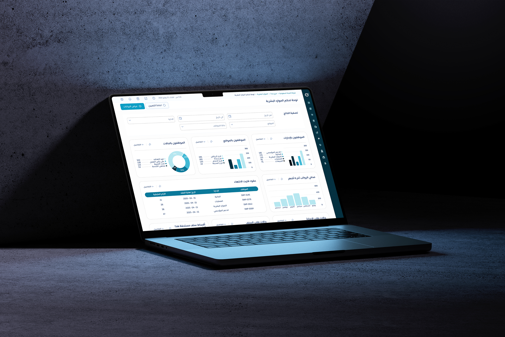
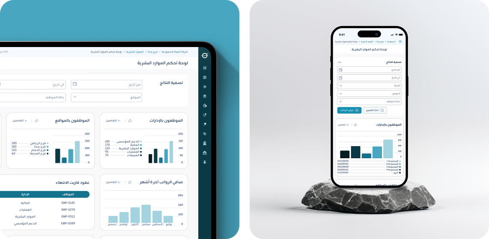
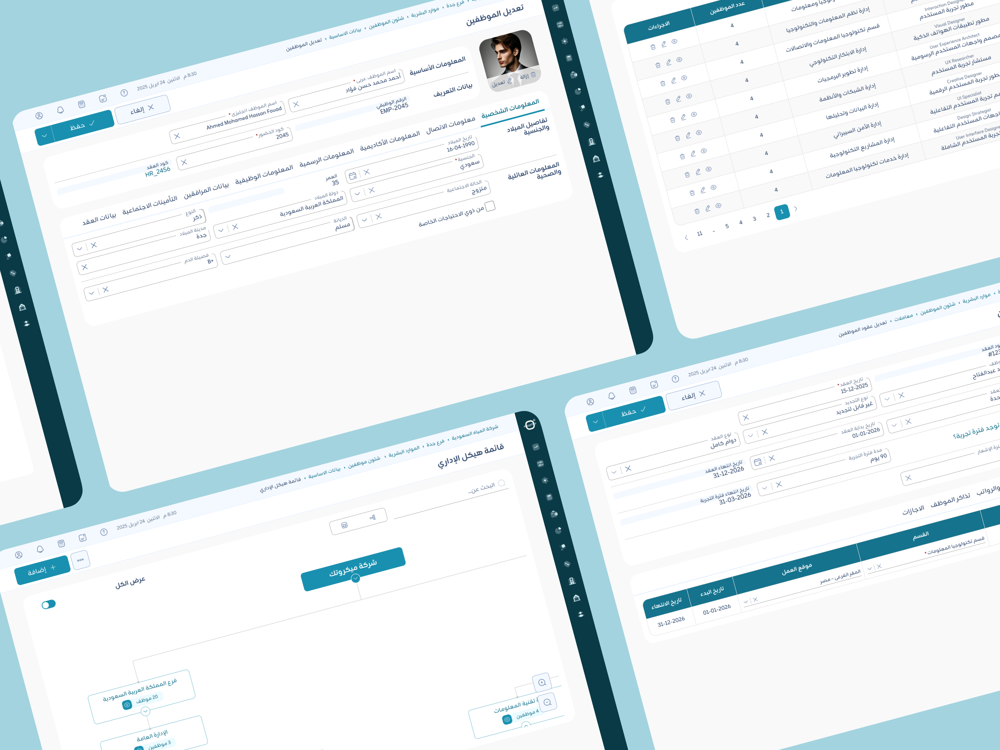
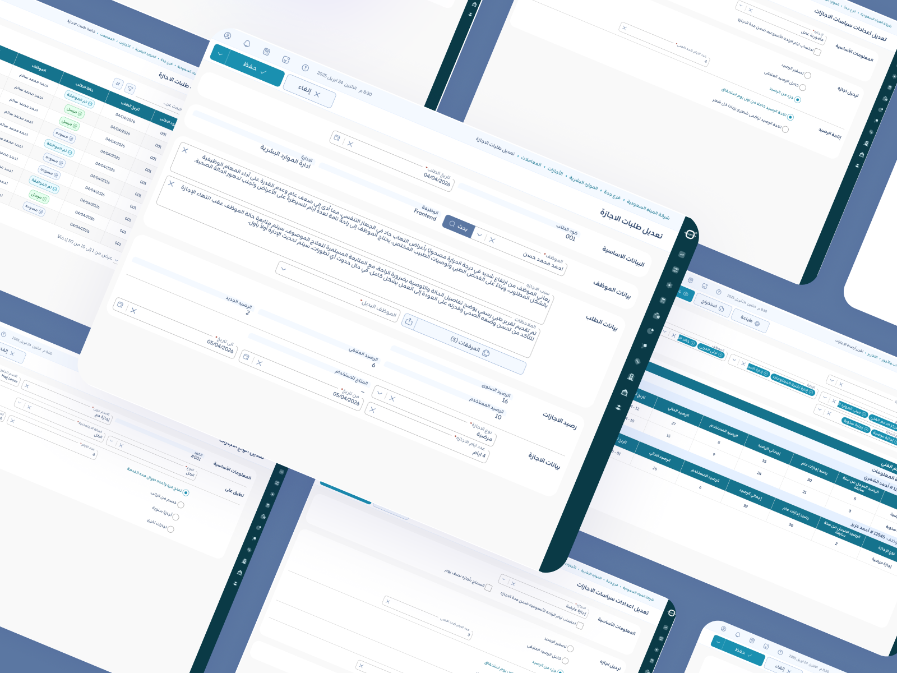
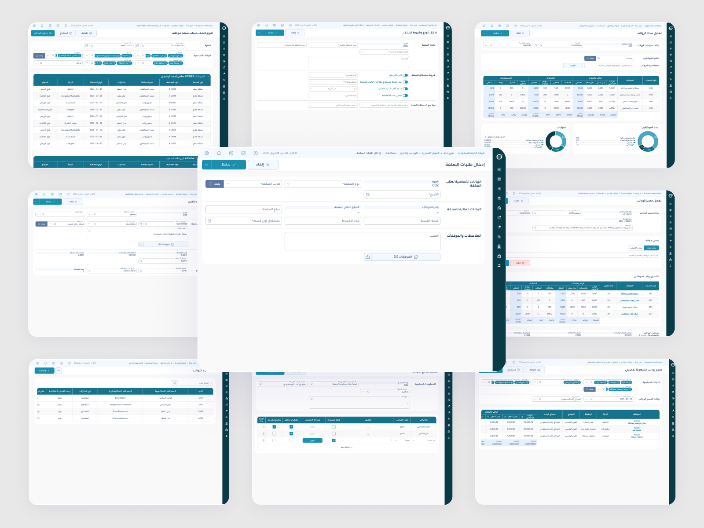

Microtec Enterprise HRM
Enterprise HR, labor law compliance, and operations platform for Egypt & Saudi Arabia. Led end-to-end UI/UX design across 4 core modules: Executive Dashboard, Personnel Affairs, Leaves & Attendance, and Payroll.

Project Overview
Microtec is a comprehensive enterprise human resource management (HRM) and workforce orchestration platform designed for multi-branch organizations across Egypt and Saudi Arabia. The goal was to replace scattered legacy spreadsheets, disconnected biometric devices, and paper approval loops with a unified, cloud-native ERP dashboard.
Why HR Teams Were Losing Time ?
HR teams and employees were dealing with disconnected tools, manual leave tracking, and complex local labor laws across Egypt and Saudi Arabia. This created extra admin work, caused frequent payroll errors, and left employees with a frustrating experience.
How Did We Turn Complex HR Operations into a Seamless Product ?
I split the system into main sections: Executive Dashboard, Personnel Affairs, Leaves & Attendance, and Payroll & Compensation, while making sure it fully supports Egyptian and Saudi regulations right out of the box. To keep the handoff smooth, I tested the UI myself on local and staging builds, catching design bugs early so the final build matched Figma 100%.
What Difference Did It Actually Make?
Unified HR admins and employees into a connected Web & Mobile ecosystem structured across 4 main sections. By leveraging Figma AI for early workflow validation, every interface was rigorously tested on local and staging environments to guarantee 100% Figma parity before going live. Here is each section in action:
A. Executive Dashboard
The entry point, giving HR admins a quick overview of employees’ stats, pending requests, and key workforce analytics.

B. Personnel Affairs
Managing employee records, profiles, job assignments, and company documents in one organized place.

C. Leaves, Attendance & Shift Policies
Setting up leave policies, adding leave types, and handling employee requests and permissions.

D. Payroll & Compensation & Loan Advances
Handling salary breakdowns, monthly payrolls, bonuses, deductions, and financial requests.

Key Takeaways
This project was a huge learning experience for me. It helped me work much closer with business teams and stakeholders to make sure our designs actually solved real business needs.
Taking charge of pre-launch testing on the live build also made sure everything looked and worked right before we officially launched.